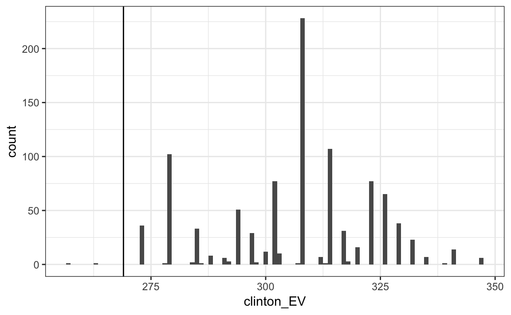
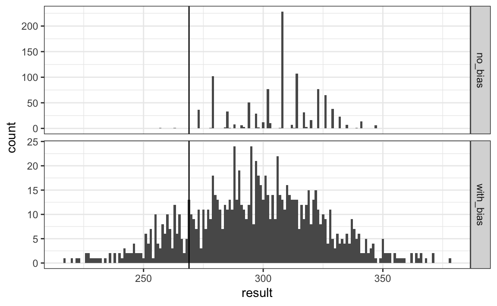
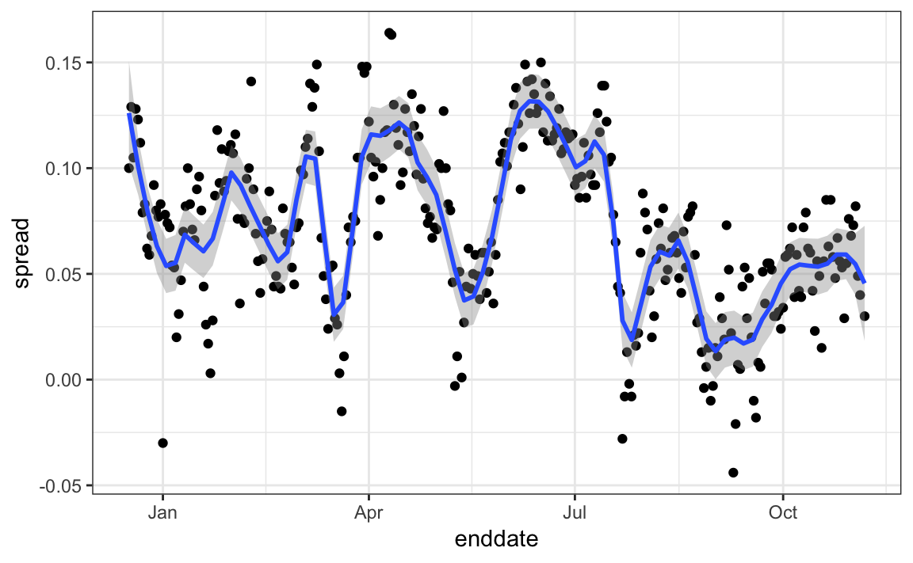

Chapter 37 Election forecasting
In previous section we generated these data tables:
polls <- polls_us_election_2016 %>%
filter(state == "U.S." & enddate >= "2016-10-31" &
(grade %in% c("A+","A","A-","B+") | is.na(grade))) %>%
mutate(spread = rawpoll_clinton/100 - rawpoll_trump/100)
one_poll_per_pollster <- polls %>% group_by(pollster) %>%
filter(enddate == max(enddate)) %>%
ungroup()
results <- one_poll_per_pollster %>%
summarize(avg = mean(spread), se = sd(spread)/sqrt(length(spread))) %>%
mutate(start = avg - 1.96*se, end = avg + 1.96*se) We will use these below for our forecasting.
37.1 Bayesian approach
Pollsters tend to make probabilistic statements about the results of the election. For example, “The chance that Obama wins the electoral colleges is 91%” is a probabilistic statement about the parameter \(d\). We showed that for the 2016 election, FiveThirtyEight gave Clinton a 81.4% chance of winning the popular vote. To do this, they used the Bayesian approach we described.
We assume a hierarchical model similar to what we did to predict the performance of a baseball player. Statistical textbooks will write the model like this:
\[ \begin{aligned} d &\sim N(\mu, \tau^2) \mbox{ describes our best guess had we not seen any polling data}\\ \bar{X} \mid d &\sim N(d, \sigma^2) \mbox{ describes randomness due to sampling and the pollster effect} \end{aligned} \]
For our best guess, we note that before any poll data is available we can use data sources other than polling data. A popular approach is to use what are called fundamentals, which are based on properties about the current economy that historically appear to have an effect in favor or against the incumbent party. We won’t use these here. Instead we will use \(\mu = 0\), which is interpreted as a model that simply does not provide any information on who will win. For the standard deviation, we will use recent historical data that shows the winner of the popular vote has an average spread of about 3.5%. Therefore we set \(\tau = 0.035\).
Now we can use the formulas for the posterior distribution for the parameter \(d\): the probability of \(d>0\) given the observed poll data:
mu <- 0
tau <- 0.035
sigma <- results$se
Y <- results$avg
B <- sigma^2 / (sigma^2 + tau^2)
posterior_mean <- B*mu + (1-B)*Y
posterior_se <- sqrt( 1/ (1/sigma^2 + 1/tau^2))
posterior_mean
#> [1] 0.0281
posterior_se
#> [1] 0.00615To make a probability statement, we use the fact that the posterior distribution is also normal. And we have a credible interval of:
posterior_mean + c(-1.96, 1.96)*posterior_se
#> [1] 0.0160 0.0401The posterior probability \(\mbox{Pr(d>0 \mid \bar{X})}\) is:
1 - pnorm(0, posterior_mean, posterior_se)
#> [1] 1This says we are 100% sure Clinton will win the popular vote which seems too overconfident. Also, it is not in agreement with FiveThirtyEight’s 81.4%. What explains this difference?
37.2 The general bias
After elections are over, one can look at the difference between pollster predictions and actual result. An important observation that our model does not take into account, is that it is common to see the general bias that affects many pollsters in the same way. There is no good explanation for this, but we do observe it in historical data: in one election, the average of polls favors Democrats by 2%, then in the following election they favor Republicans by 1%, then in the next election there is no bias, then in the following one Republicans are favored by 3%, and so on. In 2016, the polls were biased in favor of the democrats by 1-2%.
Although we know this bias term affects our polls, we have no way of knowing what this bias is until election. So we can’t correct our polls accordingly. What we can do is include a term in our model that accounts for this variability.
37.3 Mathematical representations of models
Suppose we are collecting data from one pollster and we assume there is no general bias. The pollster collects several polls with a sample size of \(N\), so we observe several measurements of the spread \(X_1, \dots, X_J\). The theory tells us that these random variables have expected value \(d\) and \(2 \sqrt{p(1-p)/N}\). For reasons that will soon become clear, we can represent this model mathematically like this:
\[ X_j = d + \varepsilon_j \] We use the index \(j\) to represent the different polls and we define \(\varepsilon_j\) to be a random variable that explains the poll to poll variability introduced by sampling error. To do this, we assume its average is 0 and standard error is \(2 \sqrt{p(1-p)/N}\). If \(d\) is 2.1 and the sample size for these polls is 2,000, we can simulate \(J=6\) data points from this model like this:
set.seed(3)
J<- 6
N <- 2000
d <- .021
p <- (d + 1)/2
X <- d + rnorm(J,0,2*sqrt(p*(1-p)/N))Now suppose we \(J=6\) data points from have data from \(I=5\) different pollsters. To represent this we now need two indexes, one for pollster and one for the polls each pollster takes. We use \(X_{ij}\) with \(i\) representing the pollster and \(j\) representing the \(j\)-th poll from that pollster. If we apply the same model, we write:
\[ X_{i,j} = d + h_i + \varepsilon_{i,j} \]
To simulate data, we now have to loop through the pollsters:
I <- 5
J <- 6
N <- 2000
X <- sapply(1:I, function(i){
d + rnorm(J,0,2*sqrt(p*(1-p)/N))
})The simulated data:

does not really seem to capture the features of the actual data:

The model above does not account for pollster to pollster variability. To fix this, we add a new term for the pollster effect. We will use \(\theta_i\) to represent the house effect of the \(i\)-th pollster. The model is now augmented to:
\[ X_{i,j} = d + h_i + \varepsilon_{i,j} \]
To simulate data from a specific pollster, we now need to draw an \(h_i\) and then add the \(\varepsilon\)s. Here is how we would do it for one specific pollster. We assume \(\sigma_h\) is 0.025:
I <- 5
J <- 6
N <- 2000
d <- .021
p <- (d + 1)/2
h <- rnorm(I, 0, 0.025)
X <- sapply(1:I, function(i){
d + h[i] + rnorm(J,0,2*sqrt(p*(1-p)/N))
})The simulated data now looks more like the actual data:

Note that \(h_i\) is common to all the observed spreads from a specific pollster. Different pollsters have a different \(h_i\), which explains why we can see the groups of points shift up and down from pollster to pollster.
Now, in the model above, we assume the average house effect is 0. We think that for every pollster biased in favor of our party, there is another one in favor of the other and assume the standard deviation is \(\sigma_h\). But historically we see that every election has a general bias affecting all polls. We can observe this with the 2016 data, but if we collect historical data we see that the average of polls misses by more than models like the one above predict. To see this, we would take the average of polls for each election year and compare it to the actual value. If we did this, we would see a difference with a standard deviation of between 2-3%. To incorporate this into the model, we can add another term to account for this variability: \[ X_{ij} = d + b + h_i + \varepsilon_{ij} \]
and model \(b\) as having expected value 0 and, based on historical data, assume the standard error for \(b\) is \(\sigma_b = 0.025\).
\[ X_{ij} = d + b + h_i + \varepsilon_{ij} \]
The variability of \(b\) is not observed because every single poll we observe in 2016 has this general bias.
An implication of adding this term to the model is that the standard deviation for \(X_{ij}\) is actually higher than what we earlier called \(\sigma\), which combines the pollster variability and the sample in variability, and was estimated with:
sd(one_poll_per_pollster$spread)
#> [1] 0.0242since we have to add \(\sigma_b\).
And note that:
\[ \bar{X} = d + b + \frac{1}{N}\sum_{i=1}^N X_i \]
which implies that the standard deviation of \(\bar{X}\) is:
\[ \sqrt{\sigma^2/N + \sigma_b^2} \] Since the same \(b\) is in every measurement, the average does not reduce its variance. This is an important point: it does not matter how many polls you take, this bias does not get reduced.
If we redo the Bayesian calculation taking this variability into account, we get a result much closer to FiveThirtyEight’s:
mu <- 0
tau <- 0.035
sigma <- sqrt(results$se^2 + .025^2)
Y <- results$avg
B <- sigma^2 / (sigma^2 + tau^2)
posterior_mean <- B*mu + (1-B)*Y
posterior_se <- sqrt( 1/ (1/sigma^2 + 1/tau^2))
1 - pnorm(0, posterior_mean, posterior_se)
#> [1] 0.81737.4 Predicting the electoral college
Up to now we have focused on the popular vote. But in the United States, elections are not decided by the popular vote but rather by what is known as the electoral college. Each state gets a number of electoral votes that depends, in a somewhat complex way, on the population size of the state. Here are the top 5 states ranked by electoral votes:
results_us_election_2016 %>% top_n(5, electoral_votes)
#> state electoral_votes clinton trump others
#> 1 California 55 61.7 31.6 6.7
#> 2 Florida 29 47.8 49.0 3.2
#> 3 Illinois 20 55.8 38.8 5.4
#> 4 New York 29 59.0 36.5 4.5
#> 5 Pennsylvania 20 47.9 48.6 3.6
#> 6 Texas 38 43.2 52.2 4.5With some minor exceptions we don’t discuss, the electoral votes are won all or nothing. For example, if you win California by just 1 vote, you still get all 55 of its electoral votes. This means that by winning a few big states by a large margin, but losing many small states by small margins, you can win the popular vote and yet lose the electoral college. This happened in 1876, 1888, 2000 and 2016. The idea behind this is to avoid a few large states having the power to dominate the presidential election. Nonetheless, many people in the US consider the electoral college unfair and would like to see it abolished.
We are now ready to predict the electoral college result for 2016. We start by aggregating results from a poll taken during the last week before the election:
results <- polls_us_election_2016 %>%
filter(state!="U.S." &
!grepl("CD", state) &
enddate >="2016-10-31" &
(grade %in% c("A+","A","A-","B+") | is.na(grade))) %>%
mutate(spread = rawpoll_clinton/100 - rawpoll_trump/100) %>%
group_by(state) %>%
summarize(avg = mean(spread), sd = sd(spread), n = n()) %>%
mutate(state = as.character(state))Here are the 10 closest races according to the polls:
results %>% arrange(abs(avg))
#> # A tibble: 47 x 4
#> state avg sd n
#> <chr> <dbl> <dbl> <int>
#> 1 Florida 0.00356 0.0163 7
#> 2 North Carolina -0.00730 0.0306 9
#> 3 Ohio -0.01042 0.0252 6
#> 4 Nevada 0.01686 0.0441 7
#> 5 Iowa -0.01973 0.0437 3
#> 6 Michigan 0.02095 0.0203 6
#> # ... with 41 more rowsWe now introduce the command left_join that will let us easily add the number of electoral votes for each state from the data set us_electoral_votes_2016. We will describe this function in detail in the Wrangling chapter. Here, we simply say that the function combines the two datasets so that the information from the second argument is added to the information in the first:
results <- left_join(results, results_us_election_2016, by = "state")Notice that some states have no polls because the winner is pretty much known:
results_us_election_2016 %>% filter(!state %in% results$state)
#> state electoral_votes clinton trump others
#> 1 Alaska 3 36.6 51.3 12.2
#> 2 Rhode Island 4 54.4 38.9 6.7
#> 3 Wyoming 3 21.9 68.2 10.0
#> 4 District of Columbia 3 90.9 4.1 5.0No polls were conducted in DC, Rhode Island, Alaska, and Wyoming because the first two are sure to be Democrats and the last two Republicans.
The code below assigns a standard deviation, the median of the rest, to states with just one poll.
results <- results %>%
mutate(sd = ifelse(is.na(sd), median(results$sd, na.rm=TRUE), sd))To make probabilistic arguments, we will use a Monte Carlo simulation. For each state, we apply the Bayesian approach to generate an election day \(d\). We could construct the priors for each state based on recent history. However, to keep it simple, we assign a prior to each state that assumes we know nothing about what will happen. Since from election year to election year the results from a specific state don’t change that much, we will assign a standard deviation of 2% or \(\tau=0.02\). The Bayesian calculation looks like this:
mu <- 0
tau <- 0.02
results %>% mutate(sigma = sd/sqrt(n),
B = sigma^2 / (sd^2 + tau^2),
posterior_mean = B*mu + (1-B)*avg,
posterior_se = sqrt( 1/ (1/sigma^2 + 1/tau^2))) %>%
arrange(abs(posterior_mean))
#> # A tibble: 47 x 12
#> state avg sd n electoral_votes clinton trump
#> <chr> <dbl> <dbl> <int> <int> <dbl> <dbl>
#> 1 Florida 0.00356 0.0163 7 29 47.8 49.0
#> 2 North Carolina -0.00730 0.0306 9 15 46.2 49.8
#> 3 Ohio -0.01042 0.0252 6 18 43.5 51.7
#> 4 Iowa -0.01973 0.0437 3 6 41.7 51.1
#> 5 Nevada 0.01686 0.0441 7 6 47.9 45.5
#> 6 Michigan 0.02095 0.0203 6 16 47.3 47.5
#> # ... with 41 more rows, and 5 more variables: others <dbl>, sigma <dbl>,
#> # B <dbl>, posterior_mean <dbl>, posterior_se <dbl>The estimates based on posterior does move the estimates towards 0, although the states with many polls are influenced less. This is expected as the more poll data we collect, the more we trust those results:
results %>% mutate(sigma = sd/sqrt(n),
B = sigma^2 / (sigma^2 + tau^2),
posterior_mean = B*mu + (1-B)*avg,
posterior_se = sqrt( 1/ (1/sigma^2 + 1/tau^2))) %>%
ggplot(aes(avg, posterior_mean, size = n)) + geom_point() +
geom_abline(slope = 1, intercept = 0)
Now we repeat this 10,000 times and generate an outcome from the posterior. In each iteration, we keep the total number of electoral votes for Clinton. Note that we add 7 to account for Rhode Island and D.C.:
mu <- 0
tau <- 0.02
clinton_EV <- replicate(1000, {
results %>% mutate(sigma = sd/sqrt(n),
B = sigma^2 / (sigma^2 + tau^2),
posterior_mean = B*mu + (1-B)*avg,
posterior_se = sqrt( 1/ (1/sigma^2 + 1/tau^2)),
simulated_result = rnorm(length(posterior_mean), posterior_mean, posterior_se),
clinton = ifelse(simulated_result>0, electoral_votes, 0)) %>%
summarize(clinton = sum(clinton)) %>%
.$clinton + 7## 7 for Rhode Island and D.C.
})
mean(clinton_EV>269)
#> [1] 0.998This model gives Clinton over 99% chance of winning. Here is a histogram of the possible outcomes:

A similar prediction was made by the Princeton Election Consortium. We now know it was quite off. What happened?
The model above ignores the general bias. The general bias in 2016 was not that big compared to other years: it was between 1 and 2%. But because the election was close in several big states, a large number of polls made the estimates of standard errors small, and by ignoring the variability introduced by the general bias, pollsters were over confident on the poll data. FiveThirtyEight, which models the general bias in a rather sophisticated way, reported a closer result. We can simulate the results now with a bias term. For the state level, the general bias can be larger so we set it at \(\sigma_b = 0.03\):
tau <- 0.02
bias_sd <- 0.03
clinton_EV_2 <- replicate(1000, {
results %>% mutate(sigma = sqrt(sd^2/n + bias_sd^2),
B = sigma^2 / (sigma^2 + tau^2),
posterior_mean = B*mu + (1-B)*avg,
posterior_se = sqrt( 1/ (1/sigma^2 + 1/tau^2)),
simulated_result = rnorm(length(posterior_mean), posterior_mean, posterior_se),
clinton = ifelse(simulated_result>0, electoral_votes, 0)) %>%
summarize(clinton = sum(clinton) + 7) %>% .$clinton ## 7 for Rhode Island and D.C.
})
mean(clinton_EV_2>269)
#> [1] 0.837This gives us a much more sensible result. Looking at the outcomes of the simulation, we see how the bias term adds variability to the final results.

FiveThirtyEight includes many other features we do not include here. One is that they model variability with distributions that have high probabilities for extreme events compared to the normal. They predicted a probability of 71%.
37.5 Forecasting
Forecasters like to make predictions well before the election. The predictions are adapted as new polls come out. However, an important question forecasters must ask is: how informative are polls taken several weeks before the election? Here we study the variability of poll results across time.
To make sure the variability we observe is not due to pollster effects, let’s study data from one pollster:
one_pollster <- polls_us_election_2016 %>%
filter(pollster == "Ipsos" & state == "U.S.") %>%
mutate(spread = rawpoll_clinton/100 - rawpoll_trump/100)Since there is no pollster effect, then perhaps the theoretical standard error matches the data-derived standard deviation. We compute both here:
se <- one_pollster %>%
summarize(empirical = sd(spread),
theoretical = 2*sqrt(mean(spread)*(1-mean(spread))/min(samplesize)))
se
#> empirical theoretical
#> 1 0.0403 0.0326The empirical standard deviation is higher than the highest possible theoretical estimate. Furthermore, the spread data does not look normal as the theory would predict:
one_pollster %>% ggplot(aes(spread)) +
geom_histogram(binwidth = 0.01, color = "black")
Where is the extra variability coming from? The following plots make a strong case that the extra variability comes from time annunciations not accounted for by the theory that assumes \(p\) is fixed:

Some of the peaks and valleys we see coincide with events such as the party conventions, which tend to give the candidate a boost. We can see them consistently across several pollsters:
polls_us_election_2016 %>%
filter(state == "U.S." & enddate>="2016-07-01") %>%
group_by(pollster) %>%
filter(n()>=10) %>%
ungroup() %>%
mutate(spread = rawpoll_clinton/100 - rawpoll_trump/100) %>%
ggplot(aes(enddate, spread)) +
geom_smooth(method = "loess", span = 0.1) +
geom_point(aes(color=pollster), show.legend = FALSE, alpha=0.6) 
This implies that, if we are going to forecast, our model must include a term to model that accounts for the time effect. We need to write a model including a bias term for time:
\[ Y_{ijt} = d + b + h_j + b_t + \varepsilon_{ijt} \]
The standard deviation of \(b_t\) would depend on \(t\) since the closer we get to election day, the smaller this bias term should be.
Pollsters also try to estimate trends, call them \(f(t)\), from these data and incorporate these into their predictions. The blue lines in the plots above:
\[ Y_{ijt} = d + b + h_j + b_t + f(t) + \varepsilon_{ijt} \]
We usually see the estimated \(f(t)\) not for the difference, but for the actual percentages for each candidate:
polls_us_election_2016 %>%
filter(state == "U.S." & enddate>="2016-07-01") %>%
select(enddate, pollster, rawpoll_clinton, rawpoll_trump) %>%
rename(Clinton = rawpoll_clinton, Trump = rawpoll_trump) %>%
gather(candidate, percentage, -enddate, -pollster) %>%
mutate(candidate = factor(candidate, levels = c("Trump","Clinton")))%>%
group_by(pollster) %>%
filter(n()>=10) %>%
ungroup() %>%
ggplot(aes(enddate, percentage, color = candidate)) +
geom_point(show.legend = FALSE, alpha=0.4) +
geom_smooth(method = "loess", span = 0.15) +
scale_y_continuous(limits = c(30,50))
#> Warning: Removed 22 rows containing non-finite values (stat_smooth).
#> Warning: Removed 22 rows containing missing values (geom_point).
Once a model like the one above is selected, we can use historical and present data to estimate all the necessary parameters to make predictions. There are a variety of methods for fitting models which we don’t discuss here. In a later chapter, we discuss some of these methods.
Exercise
- Create this table:
library(tidyverse)
library(dslabs)
data("polls_us_election_2016")
polls <- polls_us_election_2016 %>%
filter(state != "U.S." & enddate >= "2016-10-31") %>%
mutate(spread = rawpoll_clinton/100 - rawpoll_trump/100)Now for each poll use the CLT to create a 95% confidence interval for the spread reported by each poll. Call the resulting object cis with columns lower and upper for the limits of the confidence intervals. Use the `select` function to keep the columns `state, startdate, end date, pollster, grade, spread, lower, upper`.- You can add the final result to the
cistable you just created using theright_joinfunction like this:
add <- results_us_election_2016 %>% mutate(actual_spread = clinton/100 - trump/100) %>% select(state, actual_spread)
cis <- cis %>% mutate(state = as.character(state)) %>% left_join(add, by = "state")Now determine how often the 95% confidence interval includes the actual result.Now repeat this, but show the proportion of hits for each pollster. Show only pollsters with more than 5 polls and order them from best to worst. Show the number of polls conducted by each pollster and the FiveThirtyEight grade of each pollster. Hint: use
n=n(), grade = grade[1]in the call to summarize.Repeat exercise 3, but instead of pollster, stratify by state. Here we can’t show grades.
Make a barplot based on the result of exercise 4. Use
coord_flip.For forecasters, it is important to call the correct winner. Hence, even if your confidence interval is incorrect, if you correctly called the right winner, your overall predictions will do better. Add two columns to the
cistable by computing, for each poll, the difference between the predicted spread and the actual spread, and define a columnhitthat is true if the signs are the same. Hint: use the functionsign. Call the objectresidsCreate a plot like in exercise 5, but for the proportion of times the sign of the spread agreed.
In exercise 7, we see that for most states the polls had it right 100% of the time. For only 9 states did the polls miss more than 25% of the time. In particular, notice that in Wisconsin every single poll got it wrong. In Pennsylvania and Michigan more than 90% of the polls had the signs wrong. Make a histogram of the errors. What is the median of these errors?
We see that at the state level, the median error was 3% in favor of Clinton. The distribution is not centered at 0, but at 0.03. This is the general bias we described in the section above. Create a boxplot to see if the bias was general to all states or it affected some states differently. Use
filter(grade %in% c("A+","A","A-","B+") | is.na(grade)))to only include pollsters with high grades.Some of these states only have a few polls. Repeat exercise 9, but only include states with 5 good polls or more. Hint: use
group_by,filterthenungroup.You will see that the West (Washington, New Mexico, California) underestimated Hillary’s performance, while the Midwest (Michigan, Pennsylvania, Wisconsin, Ohio, Missouri) overestimated it. In our simulation, we did not model this behavior since we added general bias, rather than a regional bias. Some pollsters are now modeling correlation between similar states and estimating this correlation from historical data. To learn more about this, you can learn about random effects and mixed models.